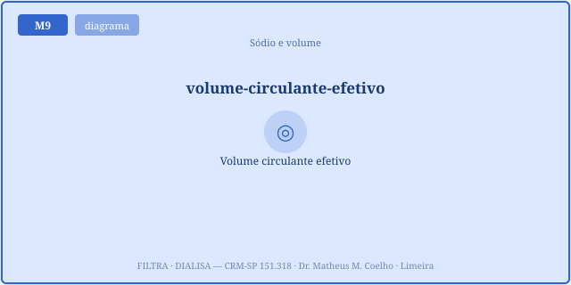
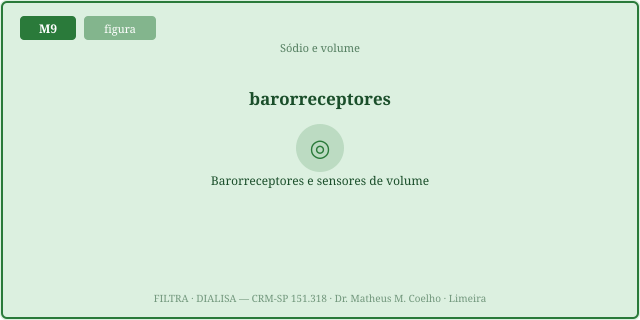
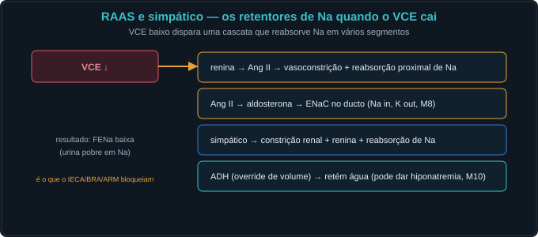
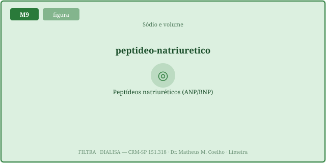
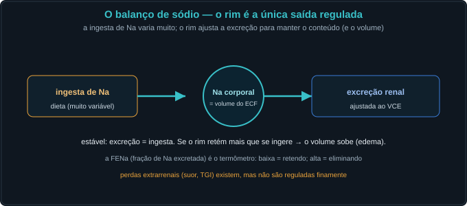
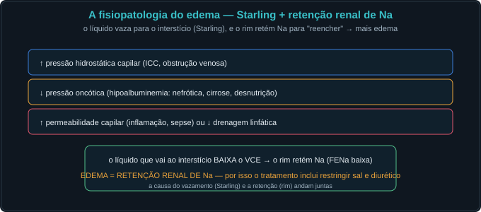
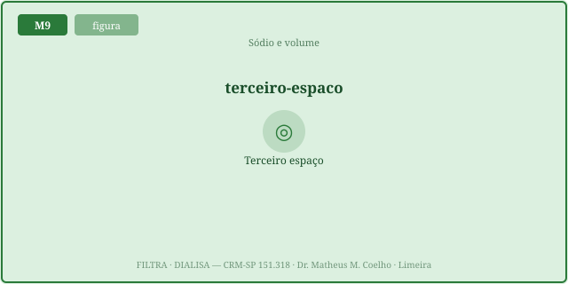
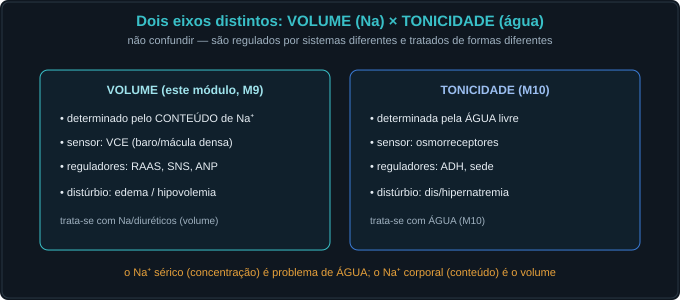

O rim é o guardião do volume circulante efetivo. Ele lê quanto sangue
realmente perfunde o leito arterial (não a soma total da água), e despacha efetores que retêm ou excretam Na para
defender esse volume. As Fig. 1–8 voltam no Caso, na Trilha e na Avaliação. Atribuição em CREDITS.md
(em curadoria).
O volume circulante efetivo (VCE) é só a fração do líquido extracelular que enche e perfunde o leito arterial — a única que os sensores conseguem ler. O resto (interstício, ascite, edema, pool venoso) existe, mas o barorreceptor não o conta. Por isso, na ICC e na cirrose, o VCE pode estar baixo com o volume total alto (Fig. 1). É o conceito-fio: homeostasia é defender o VCE.

Quatro detetores traduzem o VCE em sinal: dois de alta pressão (seio carotídeo, arco aórtico) e dois renais/atriais de baixa pressão (arteríola aferente/JGA e o estiramento dos átrios → ANP). VCE baixo → barorreceptor descarregado → RAAS/SNS sobem; VCE alto → átrios estirados → ANP/BNP sobem (Fig. 2).

Quando o VCE cai, dois braços antinatriuréticos disparam: o SNS (rápido — vasoconstrição, β1 na JGA, reabsorção proximal) e o RAAS (sustentado — renina→AngII→aldosterona→ENaC). O resultado é retenção ávida de Na: FE_Na < 1% e U_Na < 20 (Fig. 3, ponte M14).

Quando o volume sobe, o coração estirado libera os peptídeos natriuréticos: ANP (átrio) e BNP (ventrículo). Eles fazem natriurese, dilatam a aferente (↑TFG), vasodilatam e inibem a renina/aldosterona. São o freio que equilibra o acelerador do RAAS (Fig. 4). Na ICC, o BNP sobe muito — marcador de sobrecarga.

Em equilíbrio, a excreção de Na iguala a ingesta — o Na corporal total (e a ECF) ficam fixos. Se o rim retém mais do que entra (balanço > 0), a ECF expande. "Onde está o sal, está a água": o Na total é o tamanho da ECF, a natremia é outra coisa (Fig. 5).

O edema nasce quando, no capilar, a força de saída (hidrostática) vence o retorno (oncótica). Três caminhos: ① hidrostática↑ (retenção renal de Na, ICC), ② oncótica↓ (albumina baixa — cirrose, nefrótico) e ③ permeabilidade↑ (sepse). Em todos, o VCE cai e o rim retém ainda mais Na (Fig. 6).

O líquido sequestrado no terceiro espaço (ascite, derrame, edema, leak) pesa no corpo mas não perfunde. Daí o paradoxo: hipovolemia efetiva com sobrecarga total. O rim, lendo só o VCE baixo, retém Na (FE_Na < 1%) apesar do edema — e dar só volume piora o quadro (Fig. 7).

O ponto-chave: o Na total (eixo horizontal) é o tamanho da ECF; a natremia/tonicidade (eixo vertical) é problema de água. Eles se movem de forma independente — o mesmo "Na 130" cabe em qualquer quadrante. Tratar o número Na é erro: corrige-se a água (M10) e avalia-se o volume à parte (Fig. 8).

Uma paciente com insuficiência cardíaca percorre os eixos do volume e da tonicidade.
"Na baixo = falta de sal". Na verdade o sódio é proxy de água/volume; a natremia é problema de água, não de sal (Fig. 8).
A fração da ECF que enche e perfunde o leito arterial e é "sentida" pelos barorreceptores — não a soma total da água do corpo (Fig. 1).
No underfilling (ICC, cirrose, nefrótico): o líquido está no edema/ascite (não efetivo) e o leito arterial está vazio (Fig. 1, 7).
Alta pressão: seio carotídeo e arco aórtico. Baixa pressão/renal: aferente/JGA e átrios (estiramento → ANP) (Fig. 2).
O barorreceptor descarrega → RAAS e SNS sobem → retenção ávida de Na (FE_Na < 1%, U_Na < 20) (Fig. 3).
ANP (átrio) e BNP (ventrículo): com o volume alto, o coração estirado os libera → natriurese, ↑TFG, vasodilatação, inibe renina/aldo (Fig. 4).
O tamanho da ECF. Excreção = ingesta → ECF estável; reter mais que comer → ECF expande → edema. O Na total É o tamanho da ECF (Fig. 5).
Hidrostática↑ (Na retido/ICC), oncótica↓ (albumina baixa) e permeabilidade↑ (leak/sepse). Saída > retorno capilar (Fig. 6).
Líquido sequestrado (ascite, derrame, edema, leak) que pesa mas não perfunde → hipovolemia efetiva com sobrecarga total (Fig. 7).
Revelam a percepção volêmica do rim: baixos = ávido (VCE baixo); altos = natriurético (VCE alto/sobrecarga real) (Fig. 3, 5).
O Na total está sobrando (edema). O número baixo é diluição por água livre (ADH alto pelo VCE baixo) — eixo da tonicidade (Fig. 8, Caso 4).
O Na total move o eixo horizontal (tamanho da ECF); a água move o vertical (natremia). O mesmo Na 130 cabe em qualquer quadrante (Fig. 8).
O rim sente o VCE e ajusta a excreção de Na (RAAS/SNS × ANP/BNP) para defender o volume efetivo do meio interno, apesar de entradas e perdas (Fig. 1–5).
Os controles do Lab alimentam esta curva. VCE baixo → o rim retém Na avidamente → a FE_Na despenca (< 1%). O marcador laranja é o ponto de operação atual; albumina, leak e Na total deslocam o VCE.
| Variável | Atual | Comentário |
|---|---|---|
| VCE (× normal) | — | o que o rim sente |
| Sinal barorreceptor (0–1) | — | 1 = leito pleno |
| RAAS + SNS (× normal) | — | retém Na |
| ANP / BNP (× normal) | — | excreta Na |
| FE_Na (%) | — | <1 = ávido (pré-renal) |
| U_Na (mEq/L) | — | <20 = retém |
| ECF (× normal) | — | tamanho do compartimento |
| Na sérico (mEq/L) | — | 135–145 · eixo da água |
| Tonicidade (mOsm/kg) | — | ≈ 2 · Na |
| Disnatremia | — | problema de água |
| Padrão volêmico | — | — |